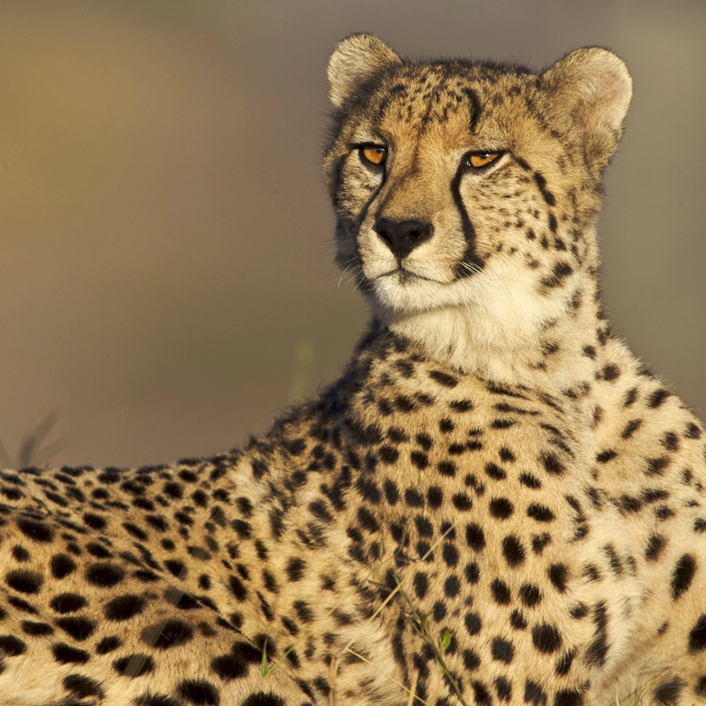
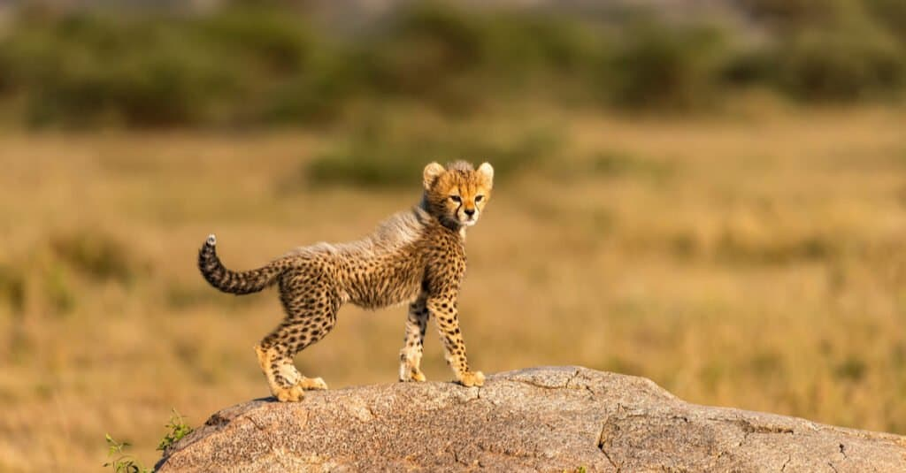

The cheetah (Acinonyx jubatus) is a large cat native to Africa and
central Iran. It is the fastest land animal, estimated to be capable
of running at 80 to 128 km/h (50 to 80 mph) with the fastest
reliably recorded speeds being 93 and 98 km/h (58 and 61 mph), and
as such has evolved specialized adaptations for speed, including a
light build, long thin legs and a long tail. It typically reaches
67–94 cm (26–37 in) at the shoulder, and the head-and-body length is
between 1.1 and 1.5 m (3 ft 7 in and 4 ft 11 in). Adults weigh
between 21 and 72 kg (46 and 159 lb). Its head is small and rounded,
with a short snout and black tear-like facial streaks. The coat is
typically tawny to creamy white or pale buff and is mostly covered
with evenly spaced, solid black spots. Four subspecies are
recognised.

The cheetah lives in three main social groups: females and their
cubs, male "coalitions", and solitary males. While females lead a
nomadic life searching for prey in large home ranges, males are more
sedentary and instead establish much smaller territories in areas
with plentiful prey and access to females. The cheetah is active
during the day, with peaks during dawn and dusk. It feeds on small-
to medium-sized prey, mostly weighing under 40 kg (88 lb), and
prefers medium-sized ungulates such as impala, springbok and
Thomson's gazelles. The cheetah typically stalks its prey to within
60–70 m (200–230 ft), charges towards it, trips it during the chase
and bites its throat to suffocate it to death. It breeds throughout
the year. After a gestation of nearly three months, a litter of
typically three or four cubs is born. Cheetah cubs are highly
vulnerable to predation by other large carnivores such as hyenas and
lions. They are weaned at around four months and are independent by
around 20 months of age.

The cheetah occurs in a variety of habitats such as savannahs in the
Serengeti, arid mountain ranges in the Sahara and hilly desert
terrain in Iran. The cheetah is threatened by several factors such
as habitat loss, conflict with humans, poaching and high
susceptibility to diseases. Historically ranging throughout most of
Sub-Saharan Africa and extending eastward into the Middle East and
to central India, the cheetah is now distributed mainly in small,
fragmented populations in central Iran and southern, eastern and
northwestern Africa. In 2016, the global cheetah population was
estimated at 7,100 individuals in the wild; it is listed as
Vulnerable on the IUCN Red List. In September 2022, they were
reintroduced to India after being extinct in the country for 70
years. In the past, cheetahs were tamed and trained for hunting
ungulates. They have been widely depicted in art, literature,
advertising, and animation.